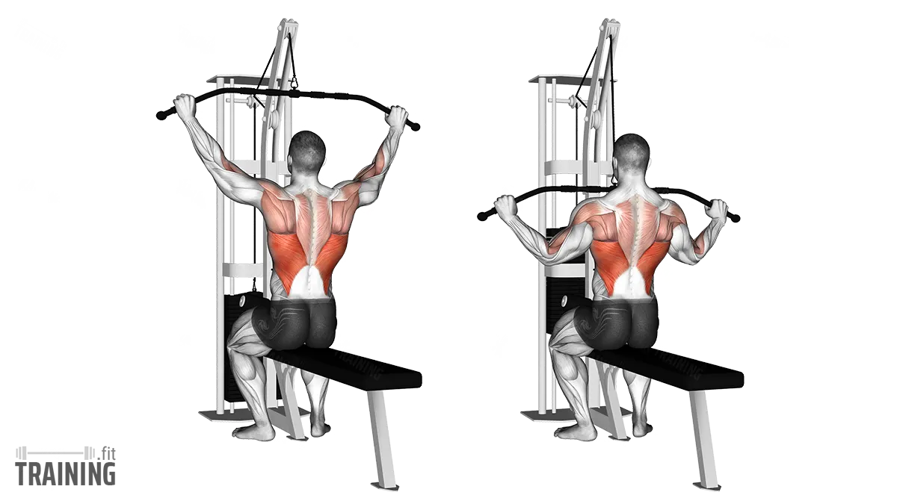
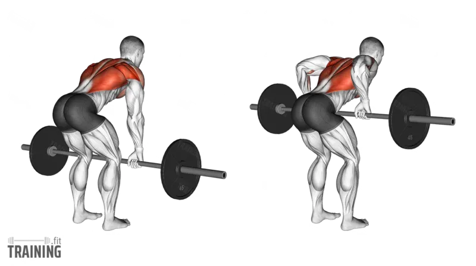
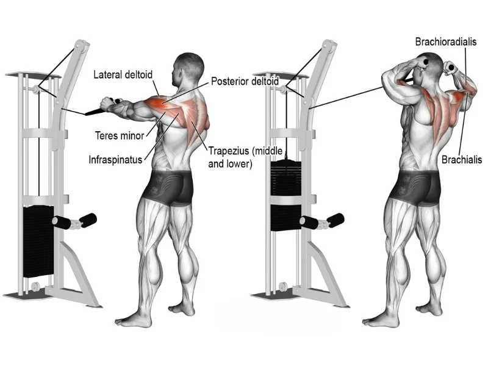
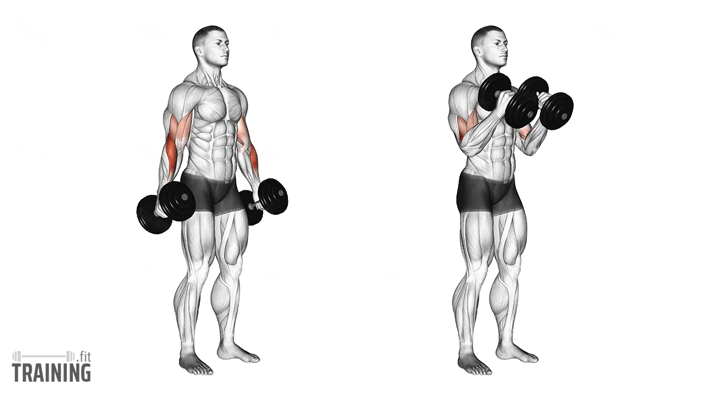
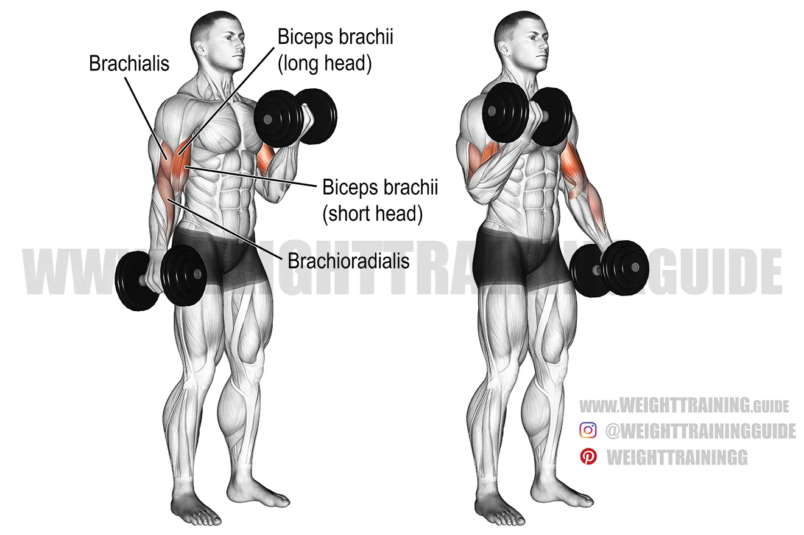

Push Day (Chest, Shoulders, Triceps)
Purpose: Focus on push muscles — chest, shoulders, triceps — with a mix of compound and isolation moves for strength, size, and quality movement.
Why a 3-part split? Better recovery, faster progress, and clearer programming.
Warm-up (non-negotiable): 5–10 min cardio + shoulder/pec activations (band pull-aparts, Y/T raises, 2 light sets of first exercise).
Workout Overview (7 Exercises — follow the order)
Incline Dumbbell Press — Upper chest, front delts, triceps
How to: Set bench 25–35°. Sit, dumbbells on knees, lie back, brace, press up slightly inward, lower under control to chest level.
Cues: Chest down, elbows ~45°, drive through palms.
Common mistakes: Bench too steep, flared elbows, bouncing off chest.
Sets/Reps: 3–4 × 6–10
Progression: Add weight/reps, pause at bottom, slower lowering.

Flat Dumbbell Fly — Chest isolation
How to: Lie flat, arms overhead, slight elbow bend. Open wide until stretch in chest, then squeeze back together.
Cues: Lead with chest, not elbows.
Common mistakes: Straight elbows, too heavy weights, shoulder strain.
Sets/Reps: 3 × 8–15
Progression: Slower lowering, longer stretch, superset with presses.


Weighted Dips — Chest & triceps
How to: Use dip bars. Lean forward for chest, upright for triceps. Lower until arms ~parallel, push back up.
Cues: Chest forward, scapula stable.
Mistakes: Too deep, kipping, wrist flare.
Sets/Reps: 3 × 6–12
Progression: Add weight, slow lowering.


Seated Dumbbell Shoulder Press — Shoulders, triceps
How to: Sit upright, press dumbbells overhead without arching lower back.
Cues: Ribcage down, head forward as weights pass.
Mistakes: Excessive arch, too wide grip, momentum use.
Sets/Reps: 3–4 × 6–10
Progression: Add load, single-arm sets, pause reps.


Dumbbell Lateral Raises — Lateral delts
How to: Raise dumbbells to shoulder height, elbows slightly bent, controlled motion.
Cues: Lead with elbows, not hands.
Mistakes: Swinging torso, lifting too high.
Sets/Reps: 3 × 10–15
Progression: Tempo control, drop-sets.


Overhead Triceps Extension — Triceps long head
How to: Hold dumbbell overhead, lower behind head, extend fully.
Cues: Elbow close, full stretch & contraction.
Mistakes: Elbow flaring, using momentum.
Sets/Reps: 3 × 8–12
Progression: Heavier weight, pause at bottom.


V-Crunches — Core finisher
How to: Lie flat, arms + legs extended. Contract abs, lift into “V,” reach hands to toes, lower slow.
Cues: Lead with chest, compress abs, avoid neck strain.
Mistakes: Pulling neck, swinging legs.
Sets/Reps: 3 × 12–20 (or 30–45s)
Progression: Add plate, slower lowering.


Program Notes
- Order: compound → accessory → isolation → core.
- Progressive overload: track reps/weight weekly.
- Recovery: 48–72 hrs before repeating push muscles.
- Joint health: add rotator cuff work (bands, face pulls).
- Increase load if you hit top reps with perfect form twice in a row.
Pull Day (Back, Biceps, Rear Delts)
Purpose: Focus on pull muscles — back, biceps, rear delts — with a mix of compound and isolation moves for strength, size, and posture improvement.
Warm-up: 5–10 min cardio + band pull-aparts, face pulls, light sets of first exercise.
Workout Overview (7 Exercises — follow the order)
Pull-Ups (or Lat Pulldown) — Lats, biceps, upper back
How to: Hang from bar, pull chest toward bar, lower slow. If not ready, use an assisted machine or bands.
Cues: Drive elbows down, avoid shrugging shoulders.
Common mistakes: Half reps, swinging, neck straining.
Sets/Reps: 3–4 × 6–12
Progression: Add weight, slow eccentric, pause at top.

Barbell Rows — Mid-back, lats, biceps
How to: Hinge at hips, flat back, pull barbell to lower ribs, lower slow.
Cues: Brace core, squeeze shoulder blades.
Common mistakes: Rounding back, jerking weight, standing too upright.
Sets/Reps: 3 × 8–10
Progression: Increase weight, slower reps, try underhand grip.

Seated Cable Row — Back thickness
How to: Sit tall, neutral spine, pull handle to midsection, control back.
Cues: Chest up, pull with elbows, not hands.
Common mistakes: Leaning back too much, using momentum.
Sets/Reps: 3 × 10–12
Progression: Slower tempo, heavier load, single-arm rows.

Face Pulls — Rear delts, traps, rotator cuff
How to: Use rope at cable station. Pull toward forehead, elbows high.
Cues: External rotate shoulders, squeeze rear delts.
Common mistakes: Elbows dropping, shrugging traps, rushing reps.
Sets/Reps: 3 × 12–15
Progression: Add weight, pause at contraction, slower reps.

Dumbbell Bicep Curls — Biceps isolation
How to: Hold dumbbells, curl up, rotate palms forward, lower slow.
Cues: Elbows tucked, control lowering.
Common mistakes: Swinging arms, flaring elbows.
Sets/Reps: 3 × 10–15
Progression: Heavier dumbbells, tempo work, hammer curls.

Hammer Curls — Biceps brachialis, forearms
How to: Hold dumbbells neutral grip, curl up, squeeze, lower under control.
Cues: Keep wrists straight, elbows close.
Common mistakes: Rotating wrists, swinging weight.
Sets/Reps: 3 × 8–12
Progression: Alternate arms, add pause at top.

Reverse Fly — Rear delts, upper back
How to: Sit or hinge forward, arms hang down, raise dumbbells out to sides until shoulder level.
Cues: Lead with elbows, slow control.
Common mistakes: Shrugging traps, swinging weights.
Sets/Reps: 3 × 12–15
Progression: Increase weight slowly, tempo work, cables/bands for variety.

Program Notes
- Order: compound → accessory → isolation → rear delts.
- Progressive overload: track reps/weight weekly.
- Recovery: 48–72 hrs before repeating pull muscles.
- Joint health: don’t skip face pulls or rotator cuff work.
- Increase load if you hit top reps with perfect form twice in a row.
Leg Workout Guide: Build Strength and Size
Purpose: When it comes to fitness, one of the biggest mistakes people make is skipping leg day. But your legs aren’t just another muscle group — they are the foundation of your strength, balance, and overall physique. Training legs doesn’t only make you look balanced, it also boosts natural hormones like testosterone and growth hormone, which support full-body muscle development.
Warm-up: 5–10 min cardio + bodyweight squats or mobility drills before loading weight.
Workout Overview (5 Exercises — follow the order)
Barbell Squats — Quads, glutes, hamstrings
How to: Bar on upper back, brace core, squat deep with controlled motion, drive up through heels.
Cues: Back straight, chest up, knees in line with toes.
Common mistakes: Shallow depth, collapsing knees, excessive forward lean.
Sets/Reps: 3–4 × 8–12
Progression: Add weight weekly, pause at bottom, slower lowering.


Bulgarian Split Squats — Quads, glutes, stability
How to: Rear foot elevated on bench, lunge down with front leg until thigh is parallel, push through heel to rise.
Cues: Keep torso upright, control movement, focus on front leg tension.
Common mistakes: Bouncing reps, leaning too far forward, rushing.
Sets/Reps: 3 × 10–12 per leg
Progression: Hold dumbbells, slow tempo, add pause at bottom.

Leg Extensions — Quad isolation
How to: Sit on machine, extend legs fully, squeeze quads at top, lower under control.
Cues: Keep hips tight against seat, focus on controlled range.
Common mistakes: Swinging weight, going too heavy, incomplete range.
Sets/Reps: 3 × 12–15
Progression: Slower lowering, drop sets, single-leg variations.

Lying Leg Curls — Hamstrings
How to: Lie on machine, curl pad toward glutes, control back down.
Cues: Keep hips pressed down, squeeze hamstrings hard at top.
Common mistakes: Lifting hips, jerking weight, incomplete reps.
Sets/Reps: 3 × 12–15
Progression: Add weight, slower tempo, use single-leg curls.

Standing Calf Raises — Calves, ankle stability
How to: Stand on calf raise machine/platform, raise heels as high as possible, lower slow with full stretch.
Cues: Pause at top, stretch at bottom, controlled motion.
Common mistakes: Bouncing, rushing, incomplete range.
Sets/Reps: 4 × 15–20
Progression: Heavier load, single-leg variations, extended holds.


Program Notes
- Form always comes before weight — don’t ego lift.
- Warm-up well to protect knees and hips.
- Stretch quads, hamstrings, and calves after training for better recovery.
- Train legs 1–2× per week depending on recovery.
Leg training is tough, but it’s also the most rewarding. The strength, balance, and growth you get from consistent leg workouts reflect in your entire body. So next time you think of skipping leg day — don’t. Train hard, stay consistent, and your legs will thank you.